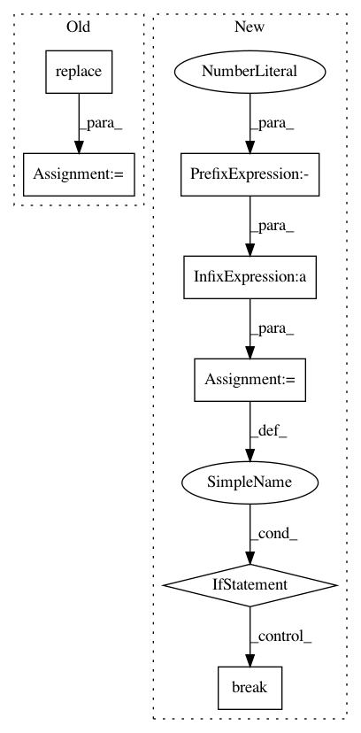

35f0270688d2bd1e31e45ebbc1771f1ff940bff6,homeassistant/components/sun.py,Sun,update_as_of,#Sun#Any#,168
Before Change
// pylint: disable=assigning-non-slot
self.observer.date = ephem.date(utc_point_in_time)
self.next_rising = self.observer.next_rising(
sun,
start=utc_point_in_time).datetime().replace(tzinfo=dt_util.UTC)
self.next_setting = self.observer.next_setting(
sun,
start=utc_point_in_time).datetime().replace(tzinfo=dt_util.UTC)
After Change
def update_as_of(self, utc_point_in_time):
Calculate sun state at a point in UTC time.
mod = -1
while True:
next_rising_dt = self.astral.sunrise_utc(
utc_point_in_time +
timedelta(days=mod), self.latitude, self.longitude)
if next_rising_dt > utc_point_in_time:
break
mod += 1
mod = -1
while True:
In pattern: SUPERPATTERN
Frequency: 3
Non-data size: 7
Instances
Project Name: home-assistant/home-assistant
Commit Name: 35f0270688d2bd1e31e45ebbc1771f1ff940bff6
Time: 2015-07-16
Author: paulus@paulusschoutsen.nl
File Name: homeassistant/components/sun.py
Class Name: Sun
Method Name: update_as_of
Project Name: tensorflow/tensorflow
Commit Name: 3d03ae2086b232cb6803507ae4defd997c256ec9
Time: 2020-11-18
Author: crccw@google.com
File Name: tensorflow/python/distribute/multi_process_lib.py
Class Name:
Method Name: _set_spawn_exe_path
Project Name: home-assistant/home-assistant
Commit Name: 35f0270688d2bd1e31e45ebbc1771f1ff940bff6
Time: 2015-07-16
Author: paulus@paulusschoutsen.nl
File Name: tests/test_component_sun.py
Class Name: TestSun
Method Name: test_setting_rising